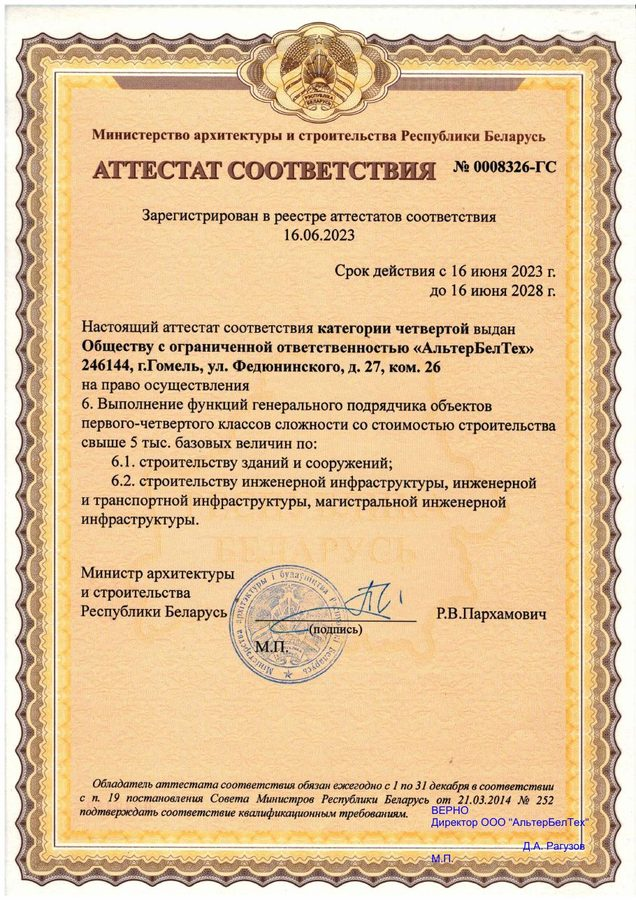
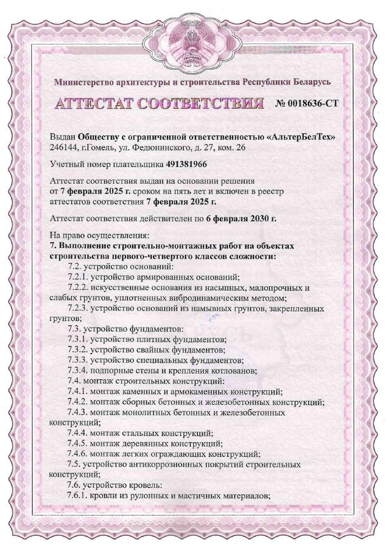
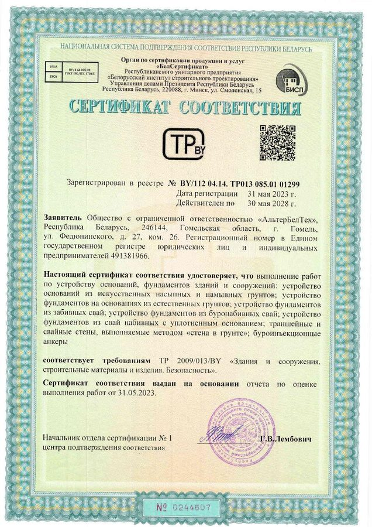
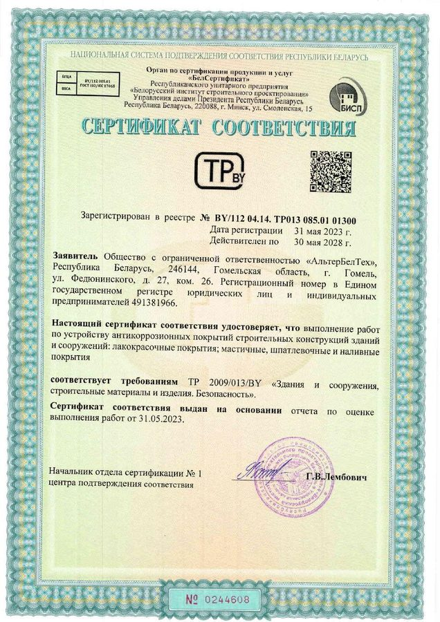
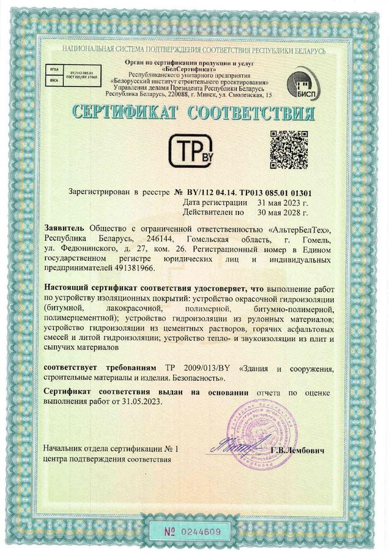
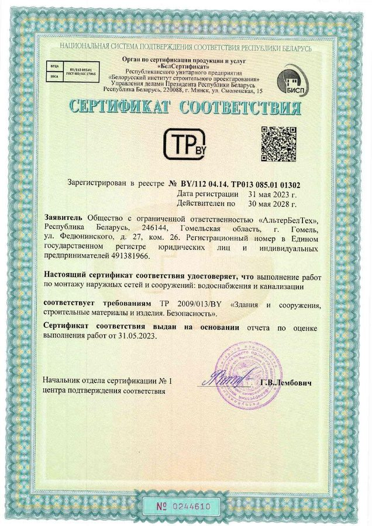
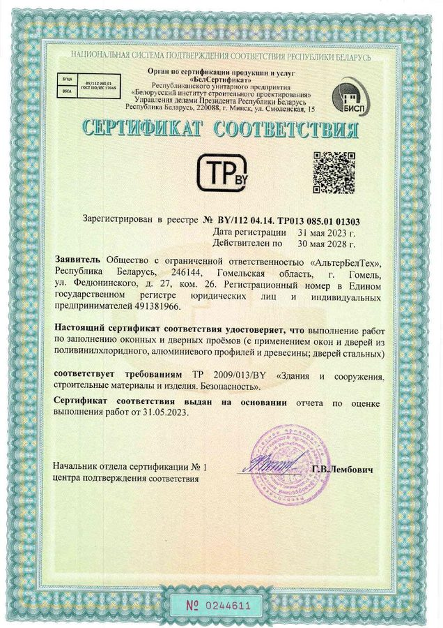
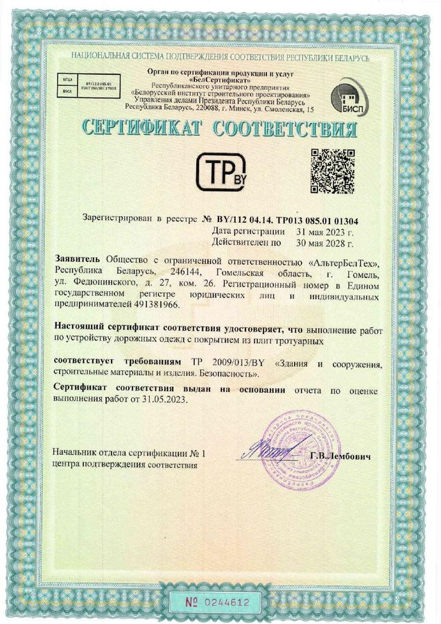

ООО «АльтерБелТех» имеет действующие аттестаты соответствия Министерства архитектуры и строительства Республики Беларусь и сертификаты соответствия требованиям ТР 2009/013/BY «Здания и сооружения, строительные материалы и изделия. Безопасность». Нажмите на документ, чтобы открыть его в PDF.
Аттестаты соответствия Минстройархитектуры

№ 0008326-ГСАттестат соответствия четвёртой категорииВыполнение функций генерального подрядчика на объектах 1–4 классов сложности: строительство зданий и сооружений, инженерной и транспортной инфраструктуры, магистральной инженерной инфраструктуры.Действителен с 16.06.2023 по 16.06.2028Открыть PDF →
№ 0018636-СТАттестат на строительно-монтажные работыСтроительно-монтажные работы на объектах 1–4 классов сложности: основания и фундаменты, строительные конструкции, кровли, антикоррозионная защита, внутренние и наружные инженерные сети, электроснабжение, трансформаторные подстанции, благоустройство.Действителен с 07.02.2025 по 06.02.2030Открыть PDF →Сертификаты соответствия ТР 2009/013/BY

№ BY/112 04.14. ТР013 085.01 01299Основания и фундаментыОснования из насыпных и намывных грунтов, фундаменты на естественных основаниях, из забивных, буронабивных и набивных свай, «стена в грунте», буроинъекционные анкеры.Действителен с 31.05.2023 по 30.05.2028Открыть PDF →
№ BY/112 04.14. ТР013 085.01 01300Антикоррозионные покрытияАнтикоррозионная защита строительных конструкций: лакокрасочные, мастичные, шпатлёвочные и наливные покрытия.Действителен с 31.05.2023 по 30.05.2028Открыть PDF →
№ BY/112 04.14. ТР013 085.01 01301Изоляционные покрытияОкрасочная и рулонная гидроизоляция, гидроизоляция из цементных растворов и асфальтовых смесей, тепло- и звукоизоляция из плит и сыпучих материалов.Действителен с 31.05.2023 по 30.05.2028Открыть PDF →
№ BY/112 04.14. ТР013 085.01 01302Наружные сети водоснабжения и канализацииМонтаж наружных сетей и сооружений водоснабжения и канализации.Действителен с 31.05.2023 по 30.05.2028Открыть PDF →
№ BY/112 04.14. ТР013 085.01 01303Оконные и дверные проёмыЗаполнение проёмов окнами и дверями из ПВХ, алюминиевого профиля и древесины, стальными дверями.Действителен с 31.05.2023 по 30.05.2028Открыть PDF →
№ BY/112 04.14. ТР013 085.01 01304Дорожные покрытия из тротуарной плиткиУстройство дорожных одежд с покрытием из плит тротуарных.Действителен с 31.05.2023 по 30.05.2028Открыть PDF →